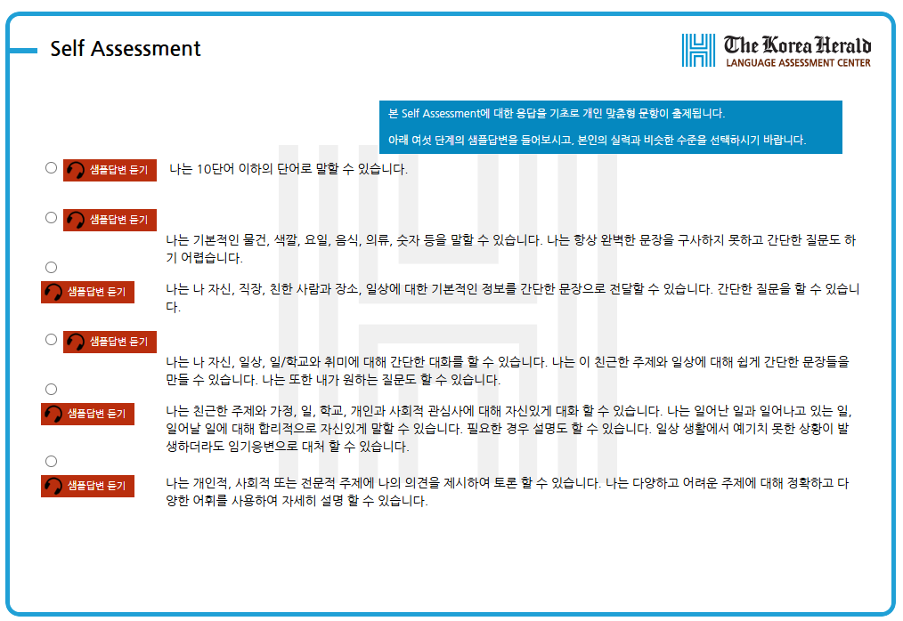
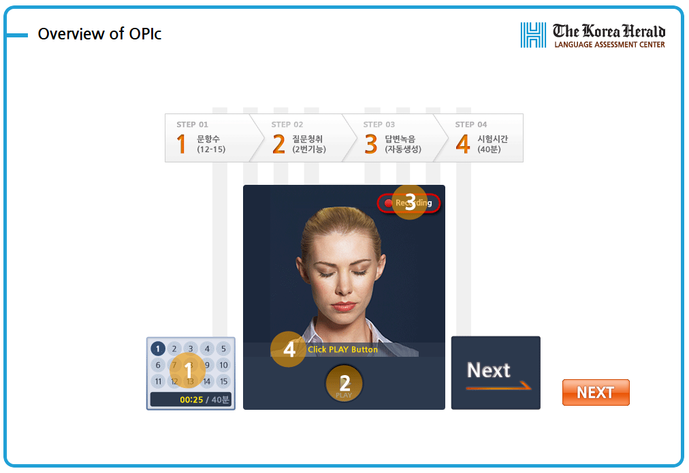
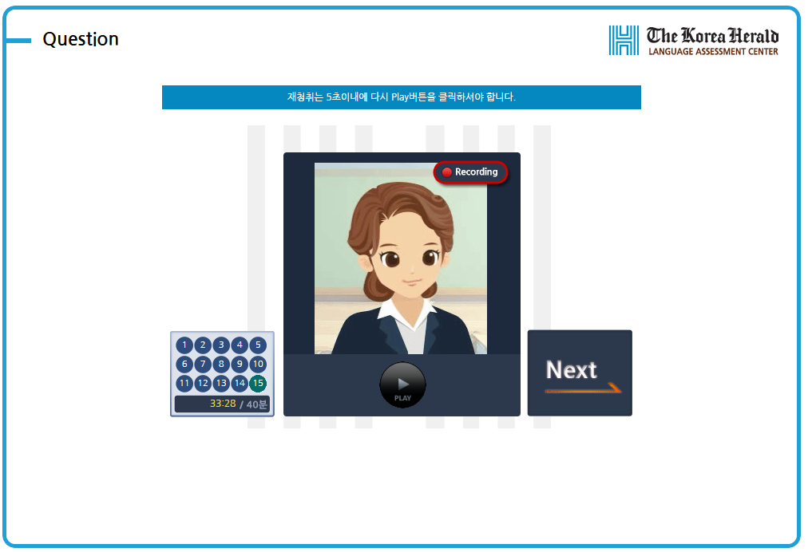
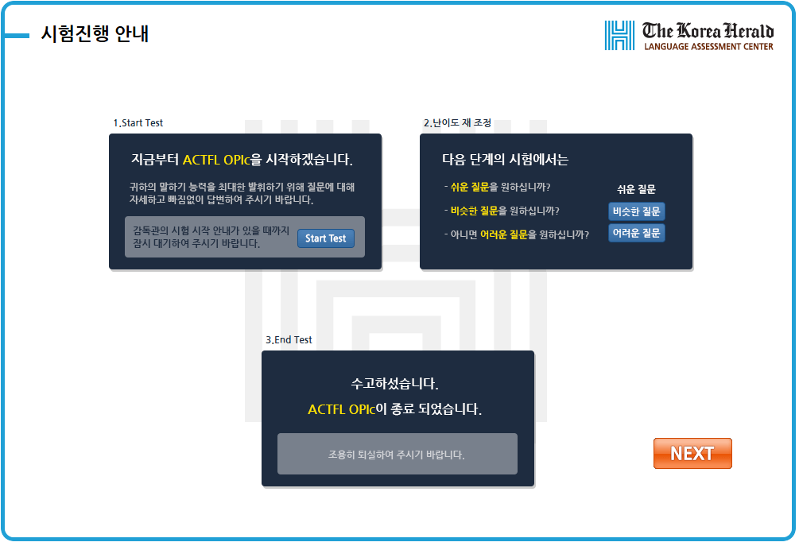
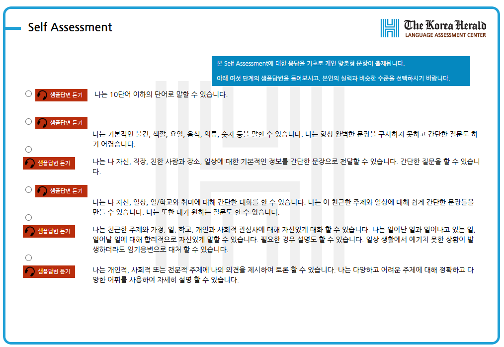
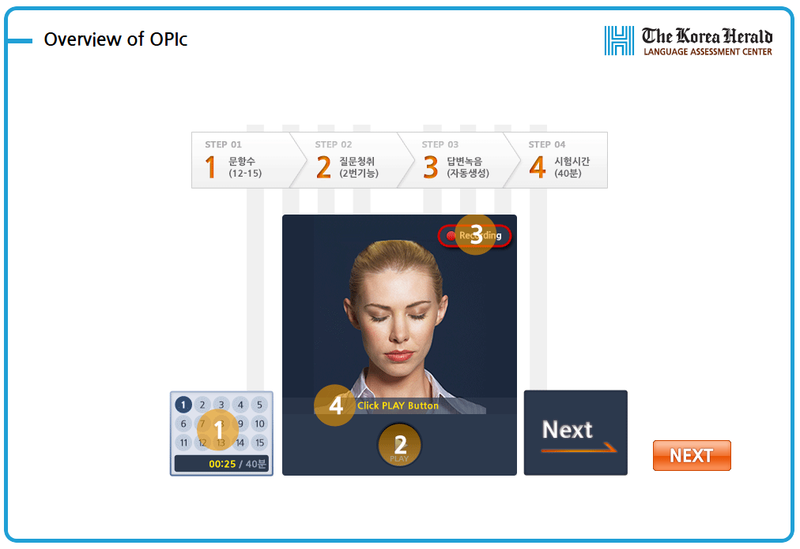
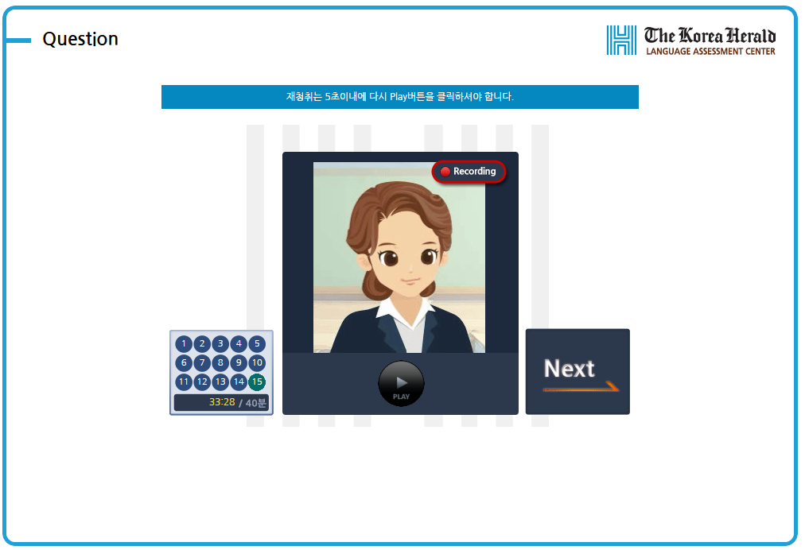
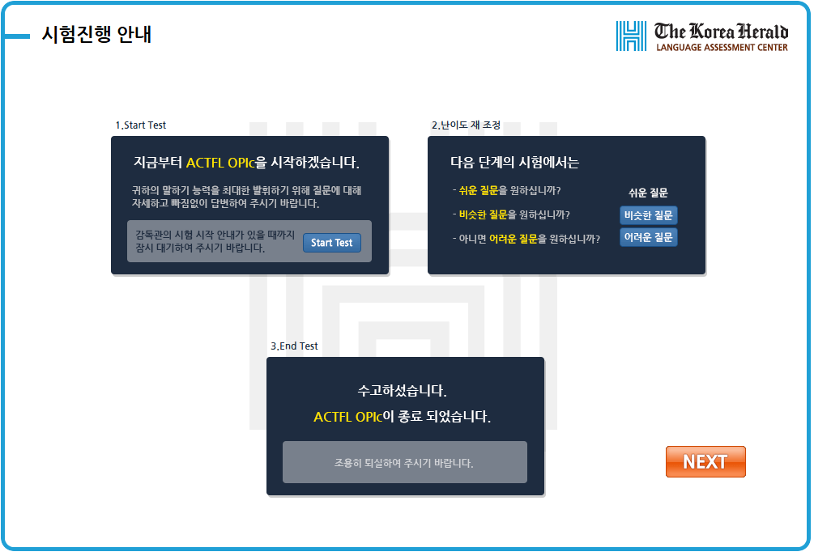

OPIc - ACTFL Speaking Assessment : The Oral Proficiency Interview - computer Ⓡ -
OPIc은 국제적인 명성의 외국어 연구기관인 미국 ACTFL에서 개발한 IBT 방식의 1:1 스피킹 시험입니다.
OPIc은 국제적인 명성의 외국어 연구기관인 미국 ACTFL에서 개발한 IBT 방식의 1:1 스피킹 시험입니다.
개인의 말하기 수준을 사전에 반영하여, 문항의 난이도를 적절하게 조정
인터뷰 형식과 유사한 형태로 개인의 관심 영역 문항 출제를 통한 응시자의 긴장완화
실제 인터뷰 상황을 반영하여 질문을 못 들었을 경우에 문항 재 청취
문항 당 답변 제한시간을 배제하여, 응시자의 발화량을 늘리고 수험자의 긴장을 완화
개인의 말하기 수준을 사전에 반영하여, 문항의 난이도를 적절하게 조정
인터뷰 형식과 유사한 형태로 개인의 관심 영역 문항 출제를 통한 응시자의 긴장완화
 







| 수업 구분 | 수업 방식 | 수강료 | 온라인 테스트 신청 |
|---|---|---|---|
| 1회 60분 | 온라인 모의고사 | 23,000원 |
| 환불 요구시기 | 환불금액(%) |
|---|---|
| 등록 후 7일 | 전체 금액 100% |
| 등록 후 15일 이내 | 전체 금액 50% |
| 15일 이후 | 0% |